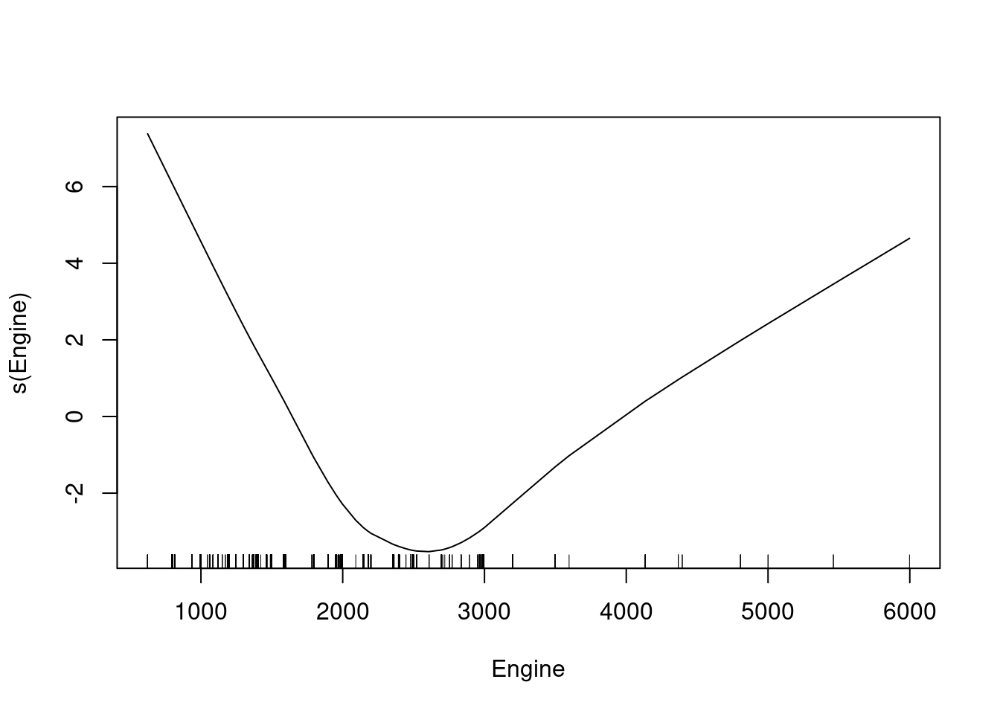
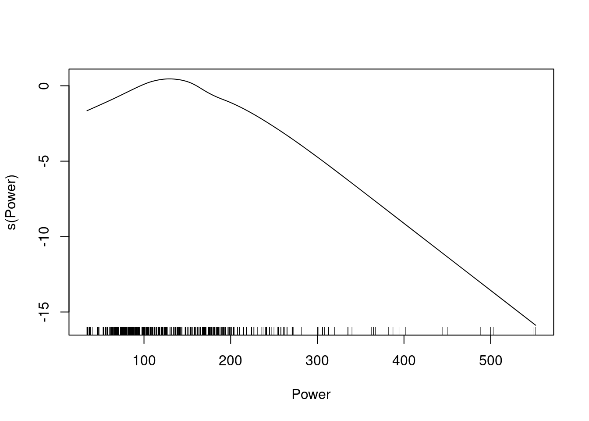

7 GAM
En los modelos GAM se pueden aplicar funciones (lineales o no lineales) a cada uno de los predictores. El paquete gamlss implementa varias funciones smooth que suelen dar buenos resultados.
modelo_gam <- gam(Gama ~ s(Engine) + s(Power) + Transmission,
family=binomial,
data = data)
summary(modelo_gam)##
## Call: gam(formula = Gama ~ s(Engine) + s(Power) + Transmission, family = binomial,
## data = data)
## Deviance Residuals:
## Min 1Q Median 3Q Max
## -2.9569 -0.2039 0.1593 0.3037 2.5937
##
## (Dispersion Parameter for binomial family taken to be 1)
##
## Null Deviance: 5649.673 on 4710 degrees of freedom
## Residual Deviance: 2071.113 on 4701 degrees of freedom
## AIC: 2091.113
##
## Number of Local Scoring Iterations: NA
##
## Anova for Parametric Effects
## Df Sum Sq Mean Sq F value Pr(>F)
## s(Engine) 1 1089.5 1089.48 1254.821 < 2.2e-16 ***
## s(Power) 1 20.6 20.64 23.772 1.12e-06 ***
## Transmission 1 9.5 9.52 10.962 0.000937 ***
## Residuals 4701 4081.6 0.87
## ---
## Signif. codes: 0 '***' 0.001 '**' 0.01 '*' 0.05 '.' 0.1 ' ' 1
##
## Anova for Nonparametric Effects
## Npar Df Npar Chisq P(Chi)
## (Intercept)
## s(Engine) 3 351.69 < 2.2e-16 ***
## s(Power) 3 106.37 < 2.2e-16 ***
## Transmission
## ---
## Signif. codes: 0 '***' 0.001 '**' 0.01 '*' 0.05 '.' 0.1 ' ' 1Debido a la incorporación de las funciones no lineales (smoothers), hay que ser cauto a la hora de interpretar los coeficientes y los errores mostrados en el summary. Los coeficientes y errores de los predictores con funciones smooth (Engine y Power) contemplan únicamente la parte lineal, ignorando la no lineal. En el caso de los predictores lineales (Transmission) sus errores se estiman asumiendo que los términos con smoother son fijos, y no contemplan la incertidumbre introducida al ajustar cada una de las funciones smooth.
Para conocer la contribución total (lineal y no lineal) de los predictores transformados por funciones smooth se puede emplear la función anova. Esta función calcula el impacto que tiene en el modelo (en términos de grados de libertad totales, AIC y significancia estadística) el eliminar cada uno de los predictores de forma secuencial.
modelo_gam## Call:
## gam(formula = Gama ~ s(Engine) + s(Power) + Transmission, family = binomial,
## data = data)
##
## Degrees of Freedom: 4710 total; 4701 Residual
## Residual Deviance: 2071.113anova(modelo_gam, test= "F")## Anova for Nonparametric Effects
## Npar Df Npar Chisq P(Chi)
## (Intercept)
## s(Engine) 3 351.69 < 2.2e-16 ***
## s(Power) 3 106.37 < 2.2e-16 ***
## Transmission
## ---
## Signif. codes: 0 '***' 0.001 '**' 0.01 '*' 0.05 '.' 0.1 ' ' 1plot(modelo_gam)
AIC(logit3, modelo_gam)## df AIC
## logit3 4 2306.247
## modelo_gam 4 2091.113El modelo GAM ha conseguido reducir todavía más el valor AIC y la distribución de sus residuos ha mejorado ligeramente.